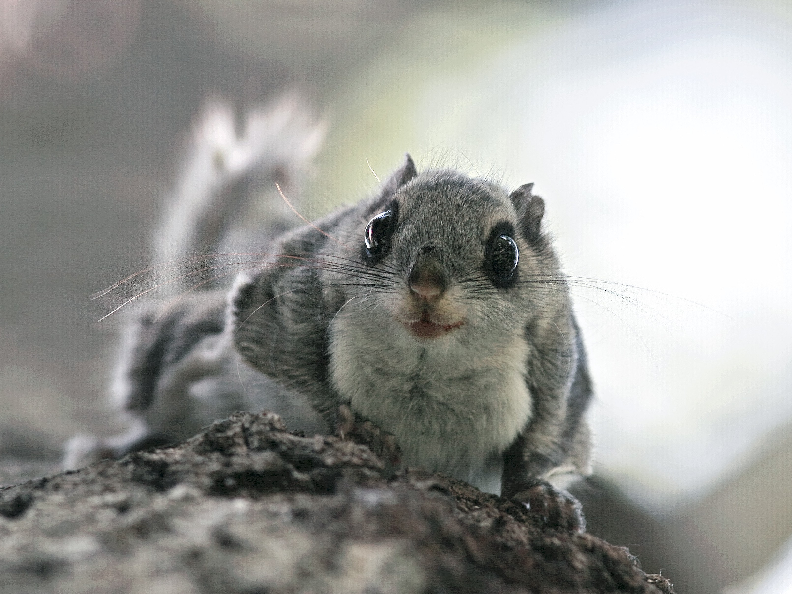
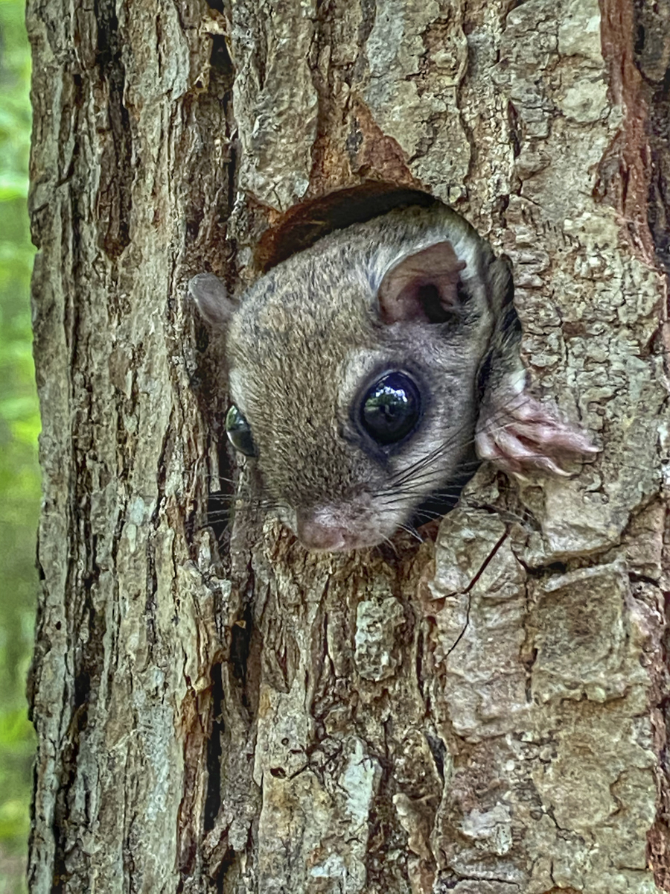
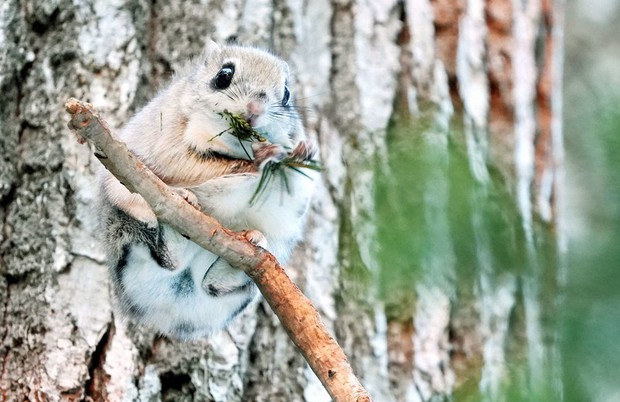
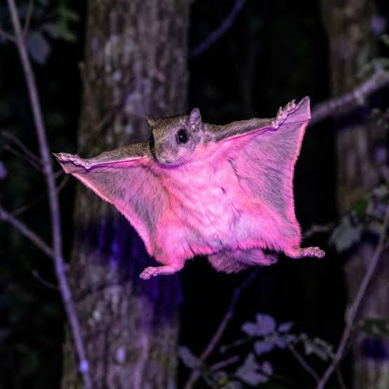
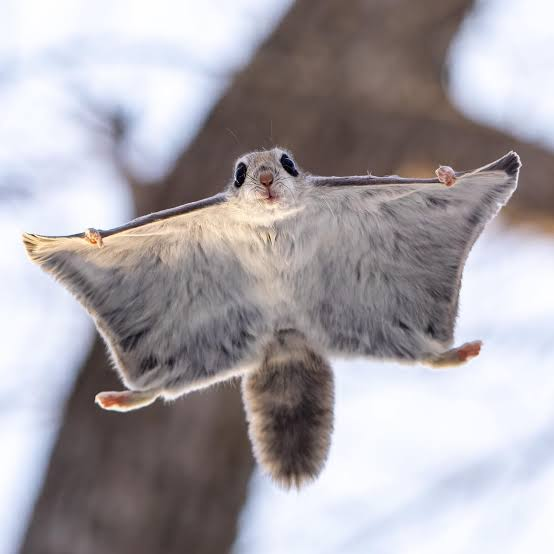
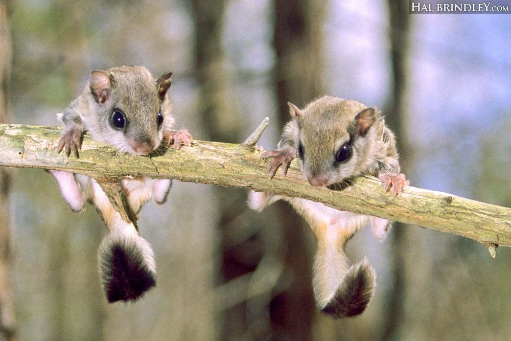

Lendorav
Pisike lendaja. Suur seikleja
Lendorav
Välimus ja liikumine
Lendoravad on tavaliselt väikese või keskmise suurusega närilised. Neil on suured silmad, pehme ja tihe karvkate. Karvkatte värvus võib liigiti erineda, ulatudes hallist ja pruunist kuni punakate toonideni. Nende karvkate aitab neil ümbritsevasse keskkonda sulanduda ja kiskjate eest varjuda.
Ees- ja tagajäsemete vahel on tal lennunahk, mille abil ta liugleb puult puule. Tavaliselt on liuglennu pikkus 10-30 m, parimal juhul kuni 100 m. Lapik saba töötab lennu ajal tüürina. Lennata lendorav siiski ei oska.

Eluviis ja toitumine
Lendorav on öise ja videvikulise eluviisiga. Päeval jääb ta inimesele harva silma. Maapinnale tuleb ta peaaegu mitte kunagi. Pesa teeb ta tavaliselt puuõõnsustesse või vanadesse puutüvedesse. Pesa vooderdab ta samblike, lehtede ja samblaga.
Lendoravad toituvad peamiselt puude lehtedest, pungadest, õitest, seemnetest ja viljadest. Mõned liigid söövad ka puukoort, noori võrseid ning pähkleid. Talveks võivad nad koguda puuõõnde toiduvarusid.

Lendorav Eestis
Eestis elab ainult üks liik, harilik lendorav. Alles on vaid üksikud väikesed pesitusalad Virumaal. Ta eelistab 60-120-aastaseid haava-kuuse segametsi. Varakevadel võib haabade juurest leida riisitera suuruseid oranže väljaheiteid.
Lendorav on Eestis kriitilises seisundis ja kuulub I kaitsekategooriasse. Suurim oht on intensiivne metsamajandus, mis hävitab vanu haavikuid. Metsade maharaiumine eraldab lendoravate elupaiku üksteisest, sest nad ei suuda liikuda mööda maapinda ühest metsast teise. Eesti lendoravate arvukuseks hinnatakse mõnikümmend kuni paarsada isendit.

Kus võib kohata lendoravat?
Lendoravaid leidub Põhja-Ameerikas, Euroopas ja Aasias. Maailmas elab umbes 50 liiki, kellest enamik asustab Aasiat, eriti Kagu-Aasia troopilisi metsi. Levinud on nad ka Hiinas, Ameerika Ühendriikides ja Soomes.
Lendoravad eelistavad metsaalasid, kus kasvavad vanad ja kõrged puud ning leidub piisavalt õõnsusi pesitsemiseks. Sõltuvalt liigist elavad nad nii okas- ja segametsades kui ka troopilistes vihmametsades. Tihe puuvõrastik pakub neile kaitset ning võimaldab puult puule liuelda.

Kas sa teadsid?

UV-valguse all helendavad lendoravad roosalt.

Nad ei oska lennata vaid liuglevad.

Nad elavad enamus elu mitte kunagi maa peale tulles.